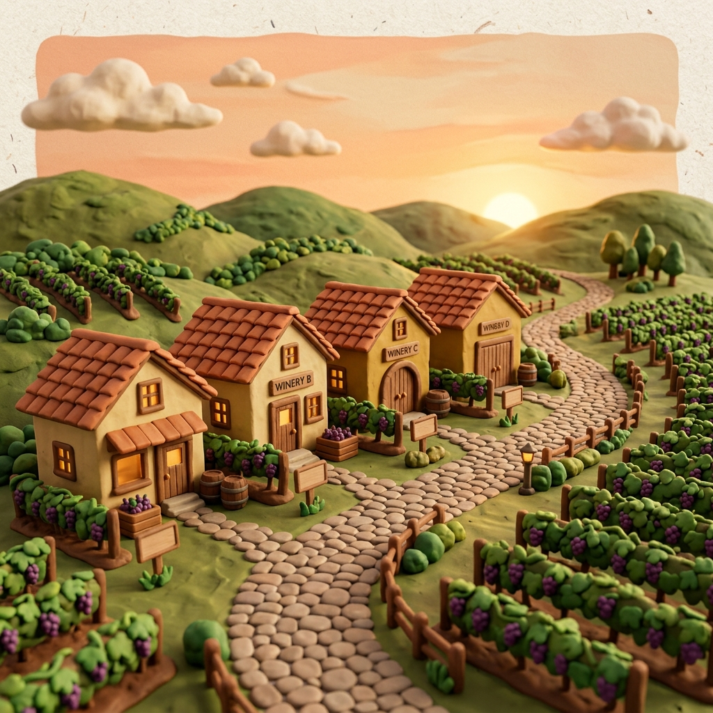
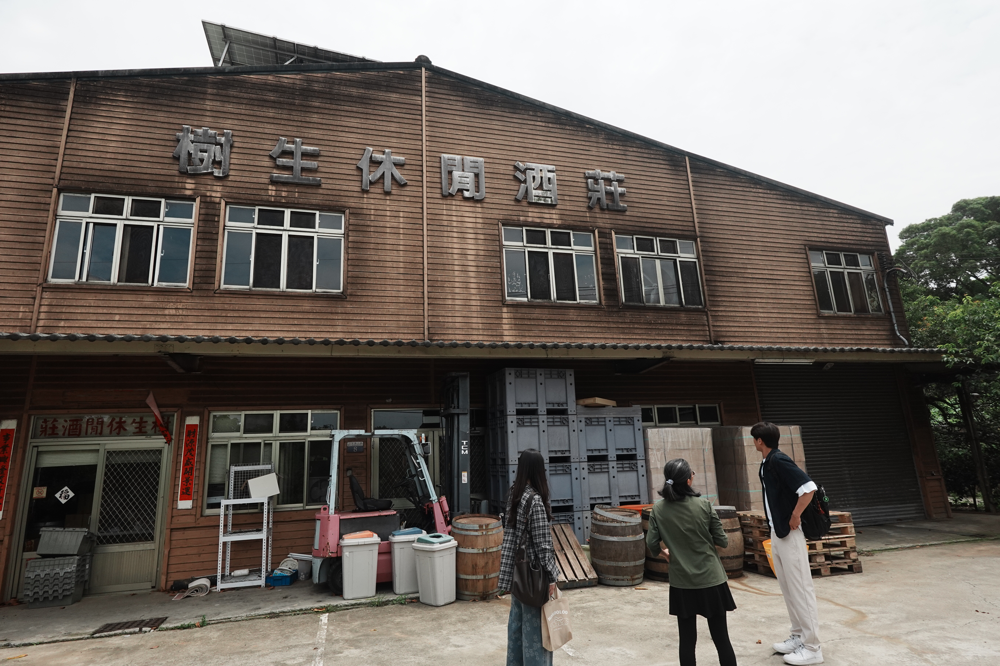
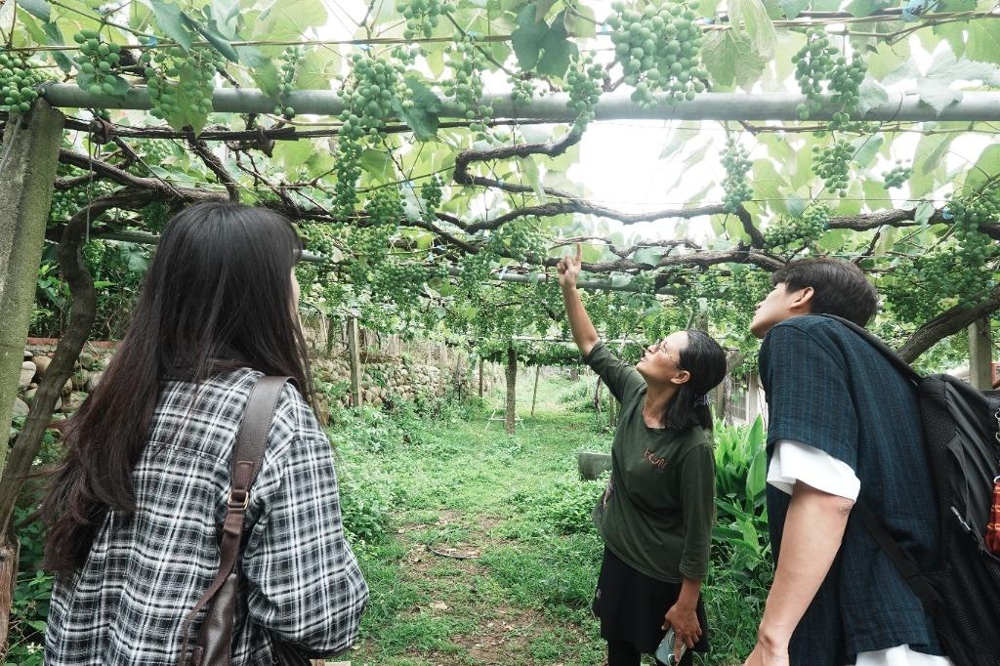
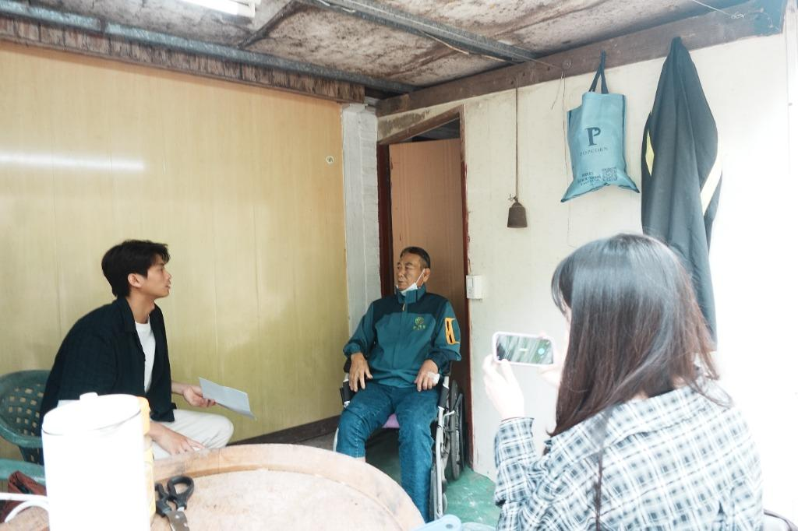
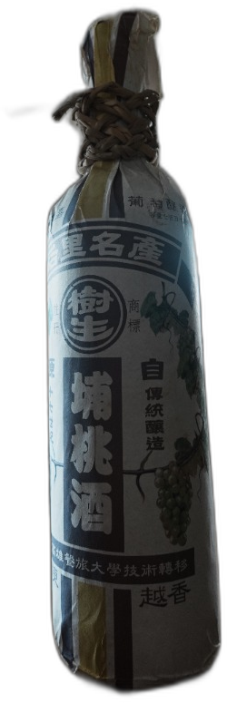
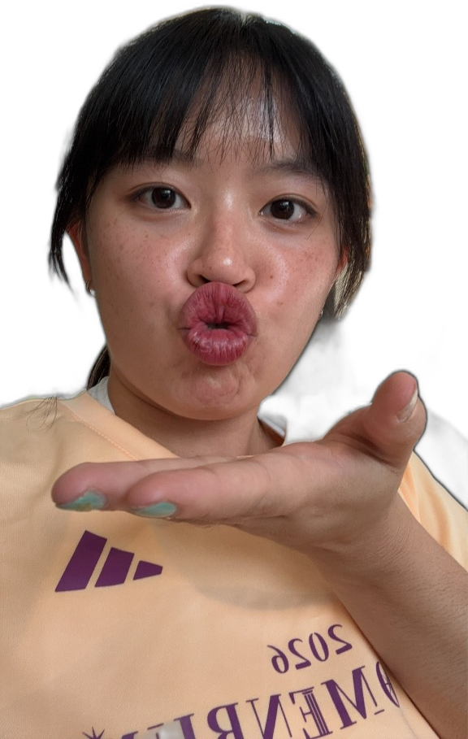
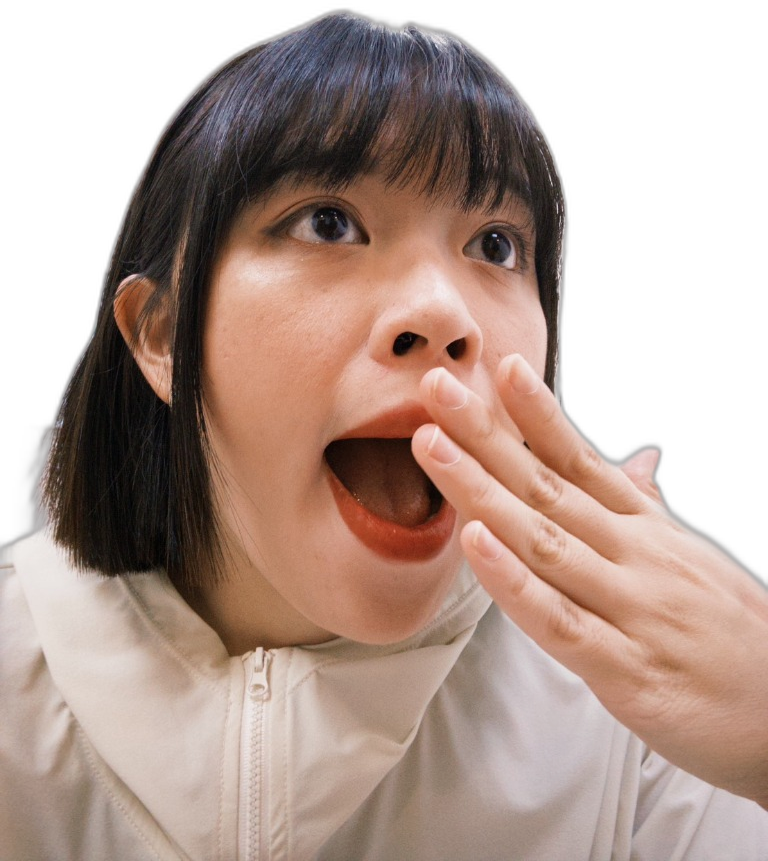
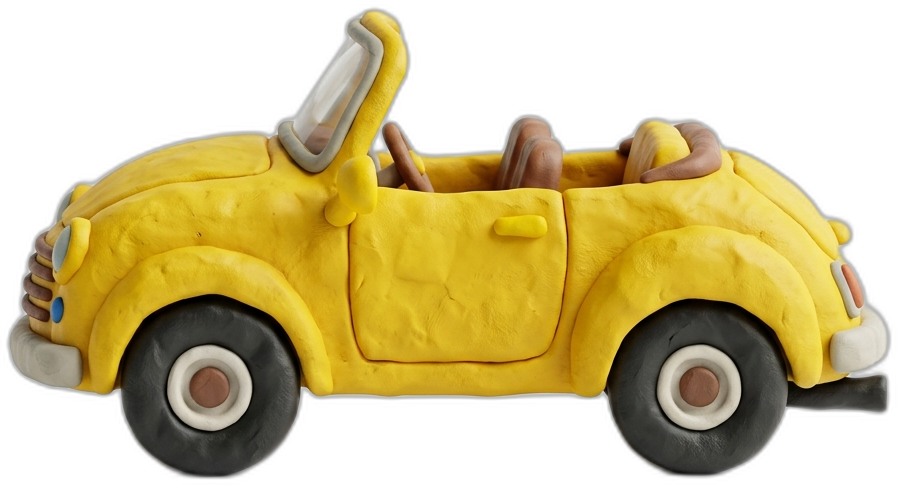

Gold Medal Wines
International Award Winner

WAIPU, TAICHUNG
SHU-SHENG

Vineyard Tour

Owner Interview

🥇


?
?
?
?


✦ Waipu Wine Cluster · Group 7 ✦
Shu-Sheng Winery's Transformation
Exploring the Key to Transforming Taiwan's Local Wineries
✦ Waipu Wine Cluster · Group 7 ✦
Shu-Sheng Winery's Transformation
Exploring the Key to Transforming Taiwan's Local Wineries
At Shu-Sheng Winery 🍇